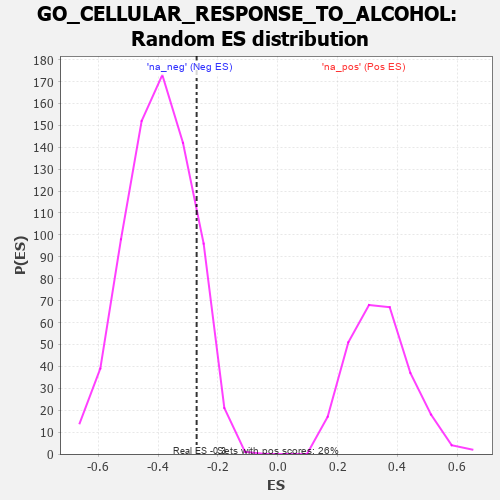

| | | Dataset | 7d |
| Phenotype | NoPhenotypeAvailable |
| Upregulated in class | na_neg |
| GeneSet | GO_CELLULAR_RESPONSE_TO_ALCOHOL |
| Enrichment Score (ES) | -0.27107644 |
| Normalized Enrichment Score (NES) | -0.68185174 |
| Nominal p-value | 0.8668478 |
| FDR q-value | 1.0 |
| FWER p-Value | 1.0 |
Table: GSEA Results Summary
 Fig 1: Enrichment plot: GO_CELLULAR_RESPONSE_TO_ALCOHOL
Fig 1: Enrichment plot: GO_CELLULAR_RESPONSE_TO_ALCOHOL
Profile of the Running ES Score & Positions of GeneSet Members on the Rank Ordered List
| PROBE | GENE SYMBOL | GENE_TITLE | RANK IN GENE LIST | RANK METRIC SCORE | RUNNING ES | CORE ENRICHMENT | | 1 | ADCY8 | | | 124 | 1.418 | 0.1034 | Yes |
| 2 | SPI1 | | | 162 | 1.182 | 0.1980 | Yes |
| 3 | BLM | | | 804 | 0.531 | 0.1620 | Yes |
| 4 | AKT1 | | | 1040 | 0.476 | 0.1723 | Yes |
| 5 | AIFM1 | | | 1072 | 0.469 | 0.2077 | Yes |
| 6 | RAD51 | | | 1090 | 0.466 | 0.2447 | Yes |
| 7 | CDK4 | | | 1626 | 0.370 | 0.2084 | No |
| 8 | GLRA2 | | | 1892 | 0.321 | 0.2021 | No |
| 9 | XRN1 | | | 2786 | 0.185 | 0.1053 | No |
| 10 | AHR | | | 3175 | 0.126 | 0.0671 | No |
| 11 | GLRA1 | | | 3957 | 0.001 | -0.0310 | No |
| 12 | KLF4 | | | 5005 | -0.198 | -0.1460 | No |
| 13 | SMO | | | 5195 | -0.247 | -0.1491 | No |
| 14 | PTEN | | | 5262 | -0.261 | -0.1355 | No |
| 15 | LARP1 | | | 5616 | -0.349 | -0.1506 | No |
| 16 | KLF2 | | | 6182 | -0.532 | -0.1770 | No |
| 17 | LRP8 | | | 6931 | -0.889 | -0.1965 | No |
| 18 | CFTR | | | 7143 | -1.030 | -0.1366 | No |
| 19 | ABCA1 | | | 7243 | -1.113 | -0.0556 | No |
| 20 | ADCY1 | | | 7695 | -1.752 | 0.0347 | No |
Table: GSEA details [plain text format]

Fig 2: GO_CELLULAR_RESPONSE_TO_ALCOHOL: Random ES distribution
Gene set null distribution of ES for GO_CELLULAR_RESPONSE_TO_ALCOHOL